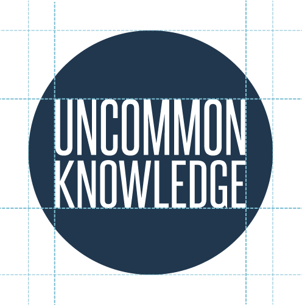
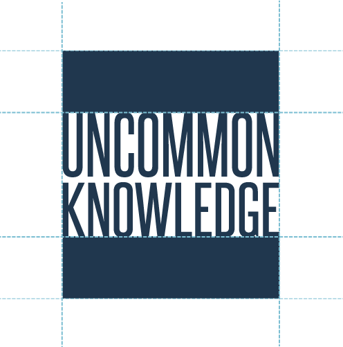
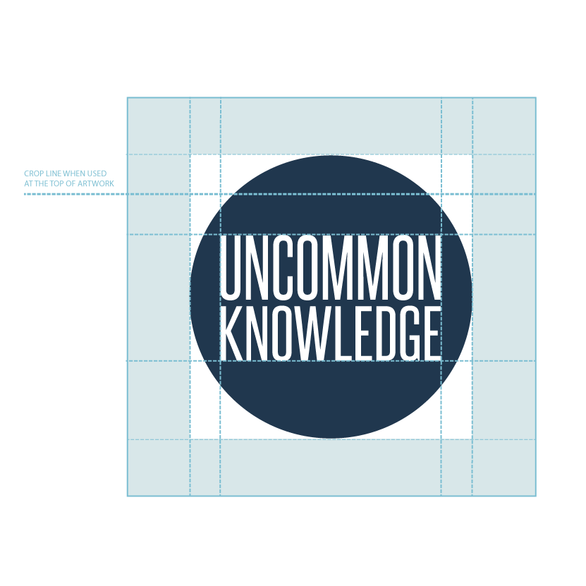
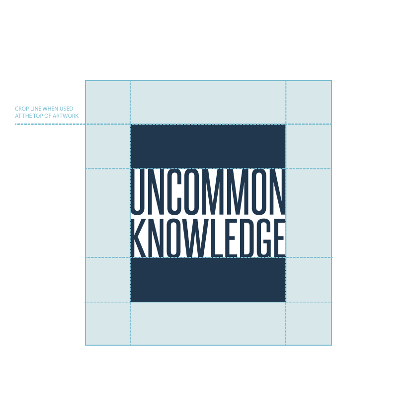
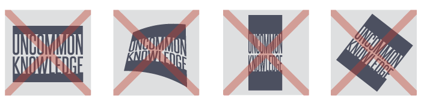
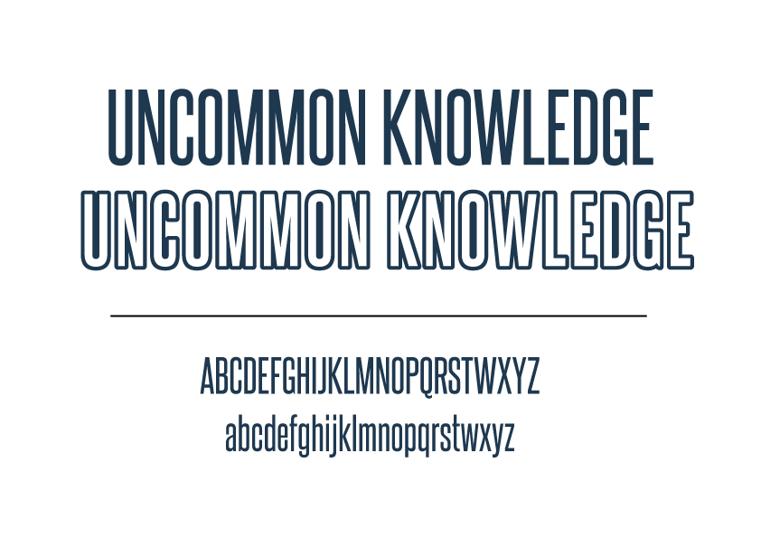
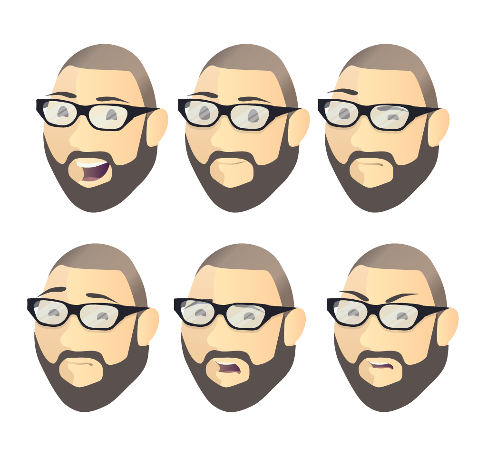
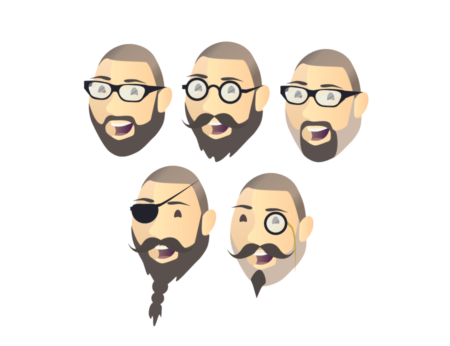

There are three versions of the uncommon knowledge logo. The Logo is conditional to where the symbol will be situated within a given setting. This brand guideline page will give some indication on how the logos should be presented and used within various applications.
The circular version of the logo sits centrally within the circle. The type should be ¾ the size of the circles diameter.Vertically from the top and bottom of the logotype the circle space is 5/8 the size of it.
The squared version of the logo should sit in between two blocks that are exactly half the size of the logo itself.
Below contains a few of the many colours that can be used within the brands colour range. Colours should subdued yet bright and cheerful. The brand allows for any colour to be used along with the logo but must be rationalized by where the logo is situated. The colour suggestions provided should be used as a guide.
CMYK
RGB
#2D2D2D
45.45.45
#21384F
33.56.79
#7CBDD2
124.189.210
#9AA782
154.167.130
#F1F1F2
241.241.242
The circular version of the logo sits centrally within the circle. The type should be ¾ the size of the circles diameter.Vertically from the top and bottom of the logotype the circle space is 5/8 the size of it.
The squared version of the logo should sit in between two blocks that are exactly half the size of the logo itself.
Here is some of the guidelines when using the circular version of the logo.
Do not change the size of
the logo text within the
circle.
Do not change the shape of
the circle surrounding the
logo text.
Do not change rotation or
angle of the logo or logo
text.
Do not vertically or
horrizontally stretch the
logo or logo text.
Here is some of the guidelines when using the Square version of the logo
Do not change the size of
the logo text within the
circle.
Do not change the shape of
the circle surrounding the
logo text.
Do not change rotation or
angle of the logo or logo
text.
Do not vertically or
horrizontally stretch the
logo or logo text.
Here is some of the guidelines when using the outlined version of the logo.
Do not change the size of
the logo text within the
circle.
Do not change the shape of
the circle surrounding the
logo text.
Do not change rotation or
angle of the logo or logo
text.
Do not vertically or
horrizontally stretch the
logo or logo text.
The font that has been used throughout the brand is SteelFish. It is a clean and blocky font that is quite modern.
The character of chris is flat designed and vibrant. He can come in two styles, textured and flat form. The character can only modified by his clothing, glasses and beard.
The Chris character can have various facial expressions to help indicate the mood. Such as if the site is under maintance, he would have an angry or confused face.
The characters facial assets can be modified and changed to a certain degree. Various glasses styles and beards can be worn, even to a comical level.
The characters clothing can be modified to a certain extent depending on the clothing type. Dress atire must be kept to a smart-casual style. Holiday and Event clothing are the only exceptions.
